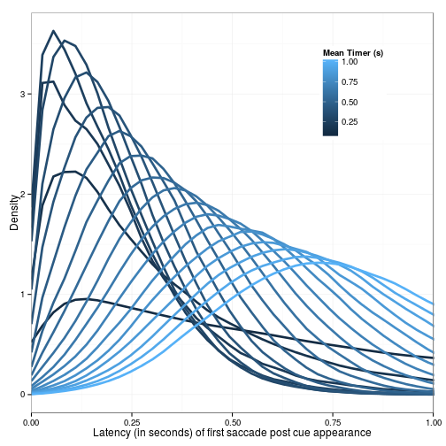

 The timer value seems to interact with the labile stage duration When timer interval << labile duration, kurtosis <0, labile duration dominates mode When timer interval ~= labile duration, kurtosis >0 When timer interval >> labile duration, kurtosis <0, timer interval dominates mode